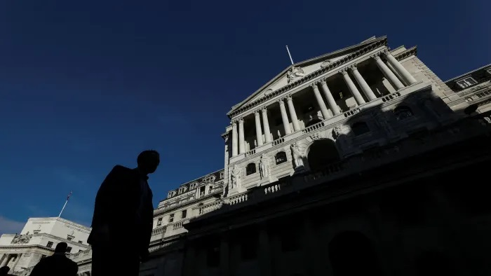

Below is a recent article of mine for the FT on a subject dear to my heart.

The Chinese are trialling it. The UK Treasury and the Bank of England have a task force on it. So, after years of talk, central bank digital currency has suddenly become serious business.Think of CBDC as the digital equivalent of banknotes. In the early 19th-century, private banknotes were used in shops. With numerous banks issuing different notes, it was complex and confusing — and bank failure could render your notes worthless.
But, since the 1844 Bank Charter Act, things have been streamlined by the Bank of England issuing its own retail banknotes. That also levelled the playing field. The banks had always had access to a risk-free payments system between themselves via their own Bank of England accounts. But with banknotes — Bank of England IOUs — something similar was available to all.
However, the Bank of England retained its “wholesaler only” role in other services with commercial banks “retailing” cheque payment services via their local networks.
But, by the turn of this century, the internet made it technically straightforward for everyone to have an online Bank of England account. After all, wholesalers everywhere were disintermediating their own retailers over the internet — so you can buy your flight from a travel agent or online direct from the airline.
However, central banking for all online would have been classic “disruptive innovation” and that’s not usually prosecuted by large incumbent systems, to say nothing of the political obstacles it would have encountered. Now, with private digital currencies nibbling at the payments system, the CBDC sits smiling up at us from the in-tray, raising all these issues again.
A Bank of England issued digital currency would enable anyone to hold the Bank’s IOUs in their digital wallet for transfer to anyone else as easily as we transfer credit from our credit cards and phones. But, being central bank money, it would be cheaper, and risk free.
Moreover, Bank of England notes generate so-called seigniorage profits — the difference between the amount central banks receive on issuing money and the much lower cost of printing it. As owner of the Bank of England, this ultimately goes to the government.
A CBDC would do something similar but on a much grander scale — handily for a Covid-ravaged Budget. Currently, 97 per cent of the money in circulation is created by commercial banks when they lend. It’s nice work if you can get it, generating them large rents.
With money being the core economic public good, governments muscling in on the banks’ near monopoly on money creation would see banks’ profits fall just as telecoms companies had to find the cash to purchase spectrum at auction that had previously been gifted to them.
This raises two further questions. First, CBDC in your digital wallet can substitute for your deposit in a bank. To prevent a wholesale run from bank deposits into CBDC in a panic, the issuance of the digital currency could be capped.
Modelling by Bank of England research staff looked at issuance equivalent to 30 per cent of GDP. This would make a major contribution to government coffers, displace costlier taxation and improve the efficiency of payments. All this would expand the economy by a hefty £90bn.
Second, falling bank deposits could reduce bank credit creation. In addition to the usual economic adjustments — for instance involving deleveraging and the expansion of equity funding — the central bank could lend back to banks or, as I’ve previously suggested, it could lend to others pledging super-safe collateral.
Of course, one might argue that, if it ain’t broke don’t fix it. But the more money creation is tied to bank debt, the more broke and unstable it is. As Mervyn King said as Bank of England Governor in 2010, “of all the many ways of organising banking, the worst is the one we have today”.
Of course, adopting a CBDC would be “courageous”. Then again, these are not normal times. At another extraordinary time — 1943 — John Maynard Keynes was advising his government and reflected to a colleague on how things had changed since he’d done the same in the first world war.
“Here I am back in the Treasury like a recurring decimal,” he said. But where previously “most people’s only idea was to get back to pre-1914. No one today feels like that about 1939. That will make an enormous difference when we get down to it.” And so it did. But that was a pandemic, a depression and another world war later.
So far, we’ve had the depression and the pandemic. How many more crises might it take to face our demons? How many might we avert by facing them now?
The writer is chief executive of Lateral Economics and visiting professor at King's College London’s Policy Institute
yes, I read the FT version of your article where I felt the main point was that the BoE could allocate itself the profits now made by commercial banks from money creation. You could tell that the nasty comments you got on that article were by financial traders who did not like that prospect.
I felt there were several other angles you could explore more. One is that countries can try to offer their digital currency to populations elsewhere as a means of payment online. In a world with lots of digital currencies that would really set the cat among the pidgeons because 'just' printing money would then be punished by competition. However, when a digital currency takes over the status of means of payment elsewhere that also means the needed volume of money goes up, with a huge bonus for the issuing country because it gets to create the money used a such, a bonus the Americans used to reap. I can see the UK wanting to be that international banker. The competition aspects of this are tricky to foresee, but the potential profits for central banks seem to me to be an order higher than the mere seniorage of money creation for national audiences.
A related aspect is the organisation of the offered spaces for transactions. It would probably be optimal if central banks do this themselves and thus set up and run a huge platform that allows them to tax and do other things on the transactions on that platform. It offers the potential for full tax control over purchases, by simply mandating that all citizens use that platform for all transactions anywhere in the world. But they would be loathe to do so because its a hell of a job. But a logical way to go.
Thanks — the other problem is that all that independence has led to a situation in which I don’t' think the central banks of the world think of themselves as having a particularly supportive relationship with taxation authorities. Meanwhile the plutocrats of the world can crank up the outrages about breaches of privacy (while they crank up the abuses of privacy on the platforms they control :).
Hello Nicholas,
Let me see if I get what you are saying.
Now. The central bank prints notes and these are distributed through commercial banks. These banks also take deposits and the public draws these down to buy stuff. Commercial banks also create money through fractional asset holdings.
Proposed. The central bank makes digital currency available to the public. This is paid for in old money and held in a digital wallet and used to buy stuff.
What is the big difference?
I see that it might save me some credit card fees and the like, but is there anything else?
In both cases the public has to hold a deposit account? . Do both sorts of deposit pay interest?
Does the central bank lend and create money that way? Or does it just issue?
Are commercial banks still allowed to create money or do they have to hold full reserves?
etc
Thanks Alex
Currently in the UK 97% of the money supply is created by banks. It's created when they lend. CBDC expands the extent to which the money supply is created by government — or the central bank. Currently that's 3 percent notes and coins but the CBDC issued in the proposals offered by the Bank of England staff is for CBDC of 30% of GDP to be created by the central bank.
In their simulation, the CBDC is funded by being offered to existing holders of government backed debt. Because the CBDC has utility not just as a store of liquid value (which is what bonds offer) but also payment, the interest rate offered on them can be lower than it is on bonds. This generates substantial interest savings for government and lowers interest rates throughout the economy. Government can then tax less etc.
Nevertheless funding of bank lending becomes more costly — because people have less reason to deposit funds with banks. So that is offset against the benefits.
As a radical alternative, if you could use bonds like cash (i.e., easy and almost free to use in transactions and saleable in partial amounts), they would provide an alternative currency that would have the benefit that you might get a payment for holding them, but with the extra risk of their value changing. I don't see why tracking them would be technically difficult these days.
Thanks Conrad,
You can think of CBDC as the digital substrate on which the idea can be executed.